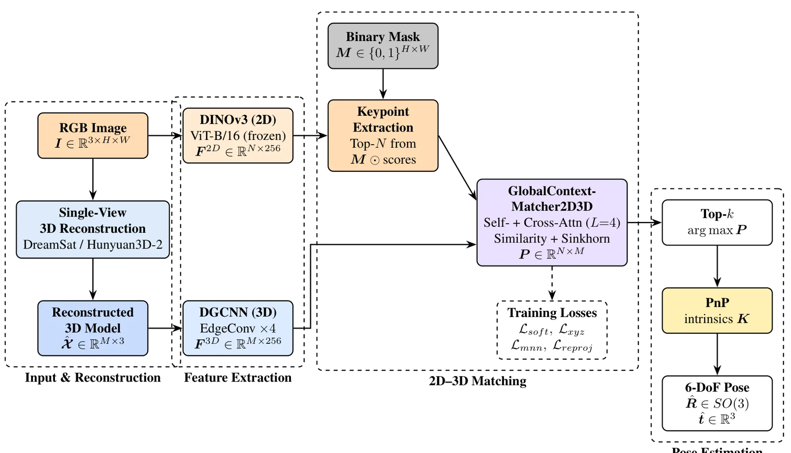
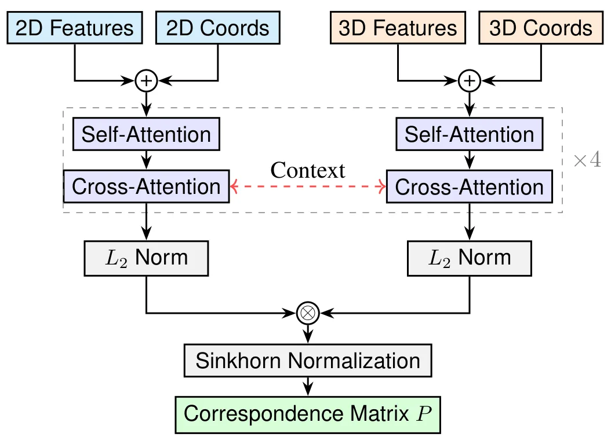
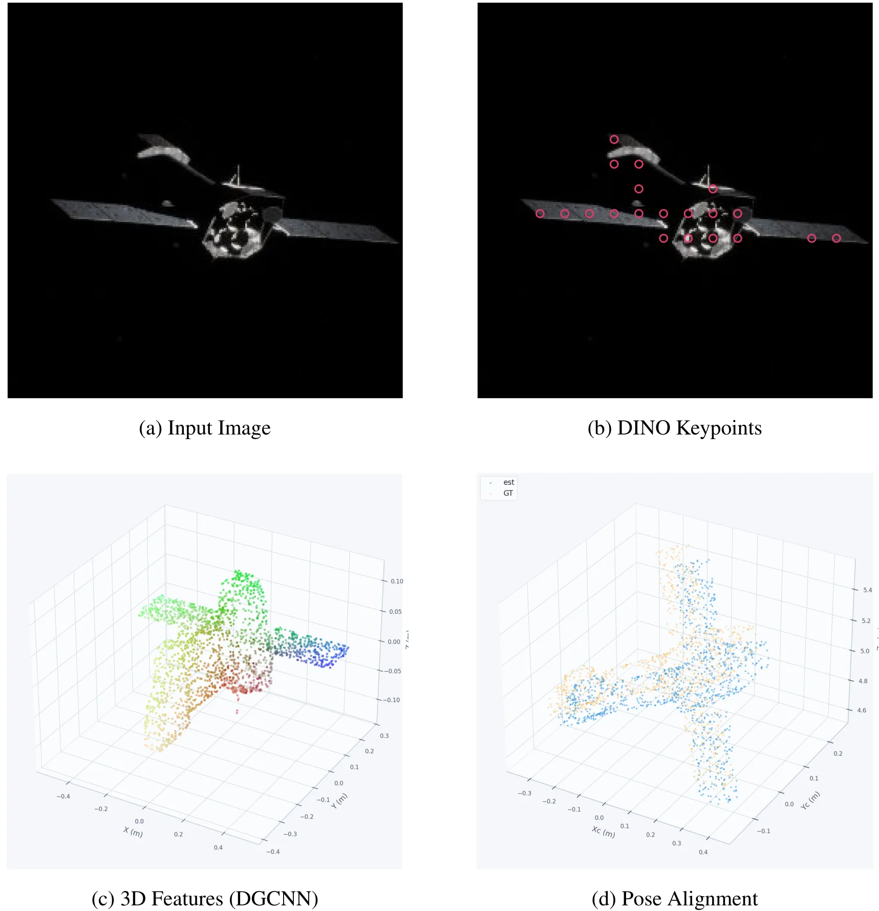

DreamSat-Pose：基于单视图三维重建与学习式 2D–3D 匹配的航天器位姿估计DreamSat-Pose: Spacecraft Pose Estimation from Single-View 3D Reconstructions and Learned 2D-3D Feature Matching
将单视图三维重建、跨模态特征匹配与 6-DoF 定位串联，适合无先验目标；但深度/距离误差、形状尺度可观性和单图重建失败传播需重点核查。
一句话工作总结
从单图重建未知航天器点云，以 DINOv3、图卷积和双流 Transformer 建立 2D–3D 对应后用 PnP 恢复位姿。
摘要
面向未知航天器的自主交会，DreamSat-Pose 从单张图像同时建立目标形状并估计相对 6-DoF 位姿。系统先重建目标三维点云，再由冻结的 DINOv3 提取图像特征、可训练动态图卷积编码器提取几何特征；双流 Transformer 通过交替自注意力和交叉注意力细化描述子，输出软 2D–3D 对应，最后交由 PnP 求解位姿。SPE3R 数据集实验以 FoundationPose 为代表基线，论文报告对未见航天器具有较强泛化，并达到 0.157° 平均指向误差。
6-DoF pose estimation is a critical task in autonomous rendezvous and proximity operations. In the case of an unknown target, this task becomes challenging as it shall be paired with the reconstruction of the target shape model. In this article, we propose a novel framework for single-shot shape and pose estimation of unknown spacecraft objects. Given a single image, we first reconstruct a 3D shape model of the target, then estimate the relative six-degrees-of-freedom pose by learning dense 2D-3D correspondences. The image features are extracted using a frozen DINOv3 vision transformer, while the geometric features are computed from the reconstructed point cloud using a trainable dynamic graph convolutional neural network encoder. A dual-stream transformer matcher refines descriptors through alternating self- and cross-attention, producing soft correspondences that are passed to a Perspective-$n$-Point solver for pose recovery. We evaluate the method on the SPE3R dataset and consider FoundationPose as a representative baseline for current state-of-the-art capabilities. Results show reliable pose estimates achieving 0.157 degrees mean pointing error using only a single image and reconstructed geometry, demonstrating strong generalization to unseen spacecraft.
中文解读摘录
图表/页面预览
{kind=link}

{kind=link}

{kind=link}
